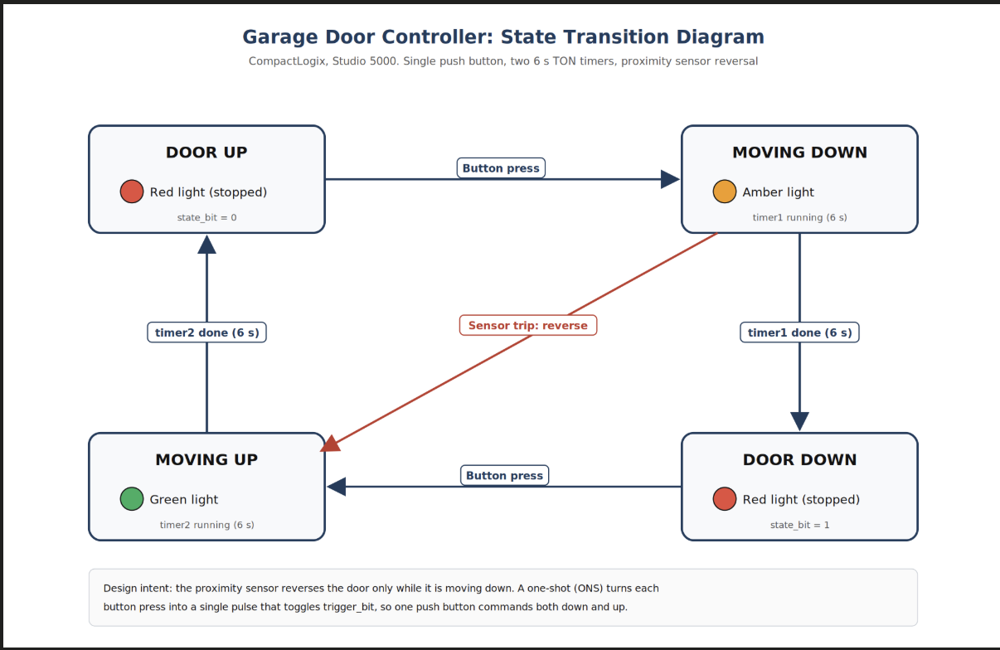
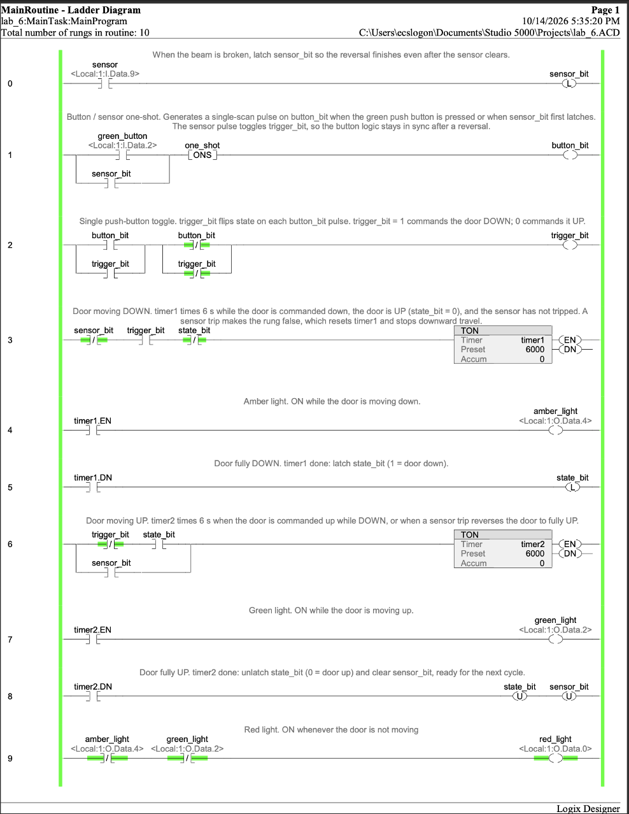
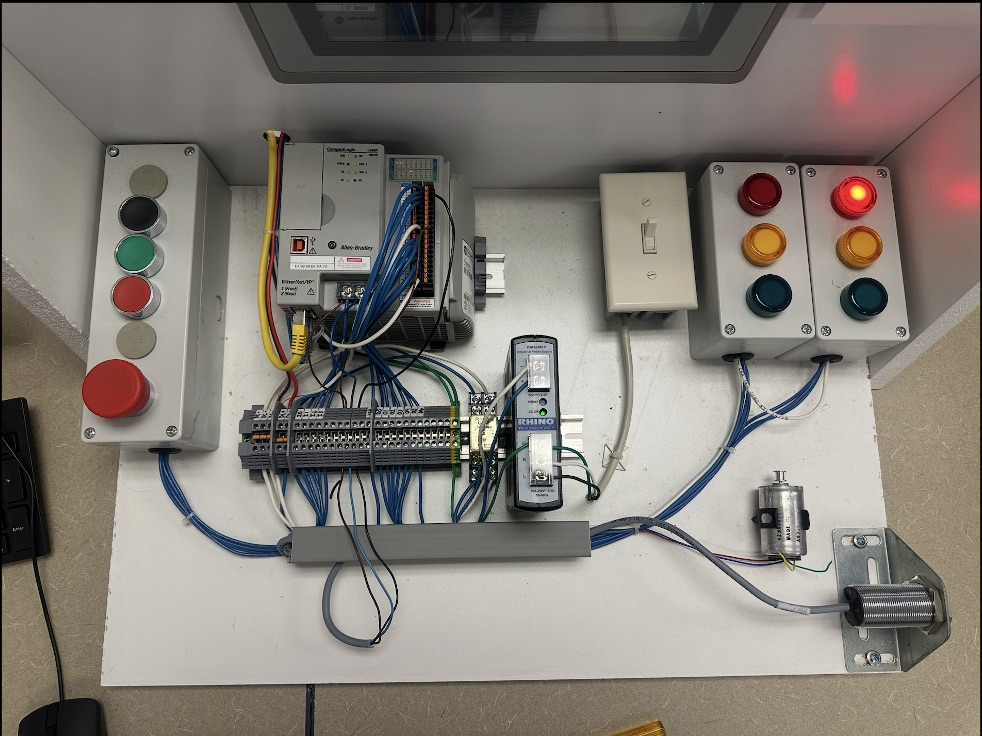

← All projects
CompactLogix Garage Door State Machine
A garage door controller designed from a state transition diagram, programmed in Studio 5000 and tested on a physical lab station. One push button commands the door down and up, TON timers model 6 seconds of travel each way, and a proximity sensor reverses the door if it is tripped while closing.
States
Four states: Door Up, Moving Down, Door Down and Moving Up. Pilot lights show the state: amber = moving down, green = moving up, red = stopped.
I/O map
| Device | Address |
|---|---|
| Green push button | Local:1:I.Data.2 |
| Proximity sensor | Local:1:I.Data.9 |
| Amber light | Local:1:O.Data.4 |
| Green light | Local:1:O.Data.2 |
| Red light | Local:1:O.Data.0 |
Logic highlights
- Rungs 0–2: Latch the sensor trip, use an ONS to turn a button press (or new trip) into one pulse, and toggle the direction with an XOR seal-in.
- Rungs 3–5: The down timer runs while commanded down with the door up and no trip latched. It drives amber and latches
state_bitwhen done. - Rungs 6–8: The up timer runs when commanded up with the door down, or on a sensor trip. It drives green and clears the state and sensor bits when done.
- Rung 9: Red is on whenever amber and green are both off.
Debugging on hardware
- The door moved by itself at power-up. Fixed by driving the timers from the push-button toggle.
- Amber stayed on after the door stopped. A timer's EN bit stays on as long as its rung is true, so I used
state_bitto open the down-timer rung when the door arrives. - The sensor stopped the door instead of reversing it. The up timer needed
state_bit = 1, which is never true mid-travel. A sensor branch now bypasses it. - The door closed by itself after a reversal. The direction bit still said "down", so a sensor trip now also toggles it through the one-shot rung.
Planned improvements
- Restrict the sensor to downward travel by adding XIC
timer1.ENin series with it, matching the state diagram. - Track mid-travel stops with an RTO so the next move starts from the real door position.
Screenshots





